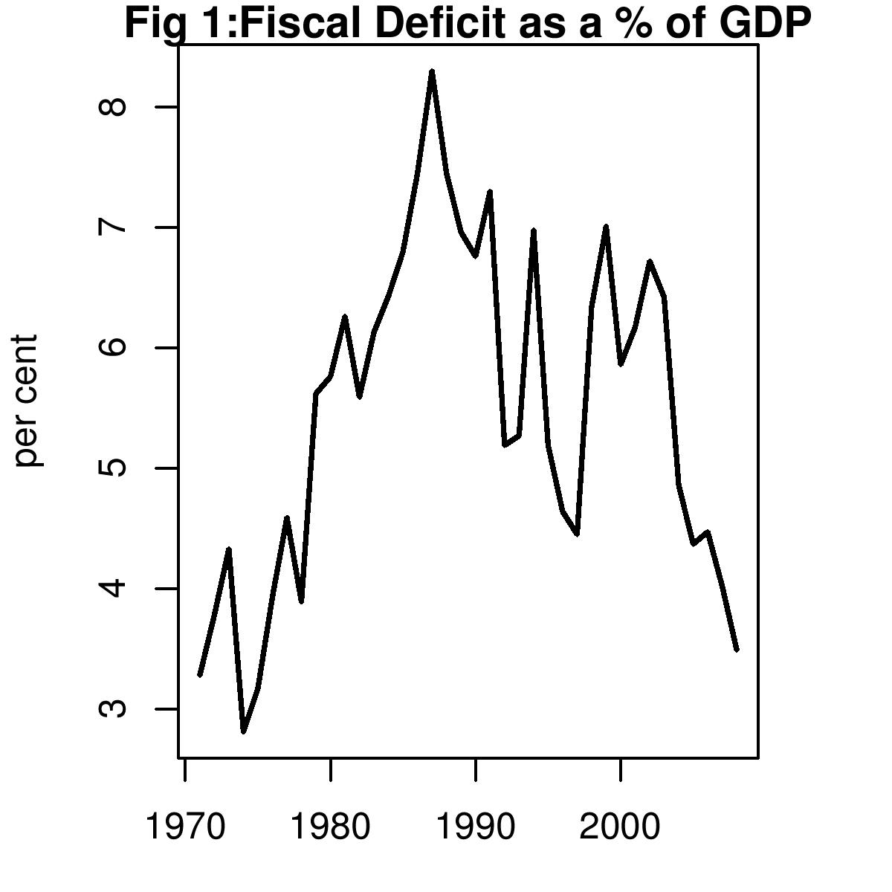

Understatement is not a virtue
Indian Express, 26 February 2008
The UPA government has been claiming that it has done well on fiscal consolidation. But there is a difference between appearances and the reality. Off balance sheet items have meant effectively larger budget deficits than the magnitudes talked about in the discussion on FRBM.
Budget 2008 will be keenly watched on how it deals with the deficit numbers. The real question is: Will the UPA continue to obfuscate the truth by hiding behind techicalities and keep a huge part of its borrowing outside the ambit of the FRBM? Or, will the Finance Minister show his commitment to fiscal consolidation by bringing in oil, food and fertiliser subsidies frontally into the deficit numbers and pave the way for the next stage of the FRBM?
The "gross fiscal deficit" of the central government is the borrowing that it does in the year. It measures the extent to which the central government lives beyond its means. This is normally expressed as a percent of GDP, or the production of goods and services, of the country in the year.
As the figure shows the eighties saw a sharp increase in the problem. The worst value ever was 8.3% in 1986-87. When Manmohan Singh became finance minister, a sharp reduction was obtained from 7.3% in 1990-91 to 5.19% in 1991-92. However, this was not followed through with further gains and the deficit stagnated at this level till 1994-95.
In the late 1990s, when the macroeconomic downturn came, tax revenues suffered and the deficit expanded all the way to 7.01% in 1998-99. From this point, major progress has been apparently achieved with a decline to 3.3 (estimated) in 2007-08. The FRBM Act requires bringing this down to 3% - or roughly the value prevalent in the seventies.
It is highly desirable that the UPA achieve this target of 3%, and thus set the stage of enactment of an FRBM-II which will put India on a long-run sound fiscal foundation. However, the recent record of deficit reduction has been marred by a substantial extent of placing expenditures of the UPA `off balance sheet'. Food, fertiliser and petroleum subsidies subsidies by this government and affect its liabilities. The "true gross fiscal deficit" is larger than the "gross fiscal deficit" number stated in the budget document.
The lastest IMF India country report estimtes the impact of these off balance sheet items on the fiscal deficit. As the table shows, for example, without including these items, the fiscal deficit in 2006-07 was 3.5 percent of GDP. However, including them, it was 4.5 percent of GDP.
Year Fiscal deficit True fiscal deficit 2003-04 4.5 5.1 2004-05 4.0 4.2 2005-06 4.1 4.5 2006-07 3.5 4.5 2007-08 3.3 4.5 In its report on the economy the Prime Minister's Economic Advisory has also noted that there are substantial off budget liabilities and this is not desirable. The bonds issued to oil companies to compensate them for the losses arising from increase in the international price of oil and inability of the Government to increase the domestic prices of oil commensurately are part of the central government's liabilities. In 2006/07 Oil Bonds issued amounted to Rs. 19,150 crore. Securities issued to Food Corporation of India in 2006/07 amounted to Rs. 16,200 crore. Fertiliser subsidies also added to the government's liabilities. The EAC estimated these add up to about 1 to 1.5% of GDP. A citibank report on the fiscal deficit had similar numbers.
In Budget at a Glance 2008-09, the summary statement of the budget, the Finance Minister should explicitly put out a consolidated number for the "true gross fiscal deficit" in Rs crore and as a percentage of GDP the way he does for the "gross fiscal deficit". Since no one is really being fooled by the understated gross numbers, it will be better to be upfront about it, and discuss the seriousness of the issue.
Back up to Ila Patnaik's media page
Back up to Ila Patnaik's home page